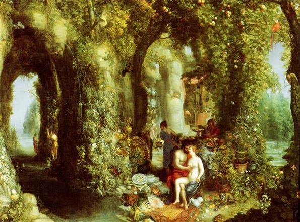

Chín ngày đêm Ulysse phó mặc số mệnh cho gió dập sóng vùi. Chàng chỉ có mỗi cách đối phó và bám chắc lấy con bè đơn sơ của mình, con bè bằng hai cây gỗ ghép lại. Đến đêm thứ mười chàng trôi dạt vào bờ biển của một hòn đảo. Đó là hòn đảo Ogygie ở giữa biển khơi bao la mà xưa nay chẳng mấy ai biết đến. Cai quản hòn đảo này là tiên nữ Calypso có những búp tóc quăn xinh đẹp và nói được tiếng người, con của vị thần Titan Atlas. Chẳng rõ nàng tiên xinh đẹp dòng dõi của Titan này cai quản hòn đảo từ bao giờ, chỉ biết hòn đảo đầy hoa thơm quả ngọt, thức ăn, vật phẩm dồi dào mùa nào thức ấy chẳng hề thiếu thốn một thứ gì. Hơn nữa, trên đảo ngoài Calypso và những người nữ tỳ hầu hạ nàng, chẳng có một bộ lạc đông đảo nào ở cho nên của cải vật phẩm đã sung túc lại càng sung túc. Calypso sống biệt lập ở đây chẳng hề giao thiệp với thế giới thần thánh cũng như với loài người trần tục đoản mệnh.
Trôi dạt vào hòn đảo, Ulysse lần tìm vào giữa nơi có tiếng hát véo von và làn khói nhẹ lượn lờ trên những lùm cây xanh ngắt, và chàng đã đặt chân đến động của tiên nữ Calypso có những búp tóc quăn xinh đẹp và nói được tiếng người. Calypso đãi người anh hùng Ulysse rất chân thành và nồng hậu. Nàng chiều chuộng người anh hùng, chăm sóc chàng hết sức chu đáo. Duy chỉ có mỗi một điều nàng không thể chiều lòng chàng, làm theo ý chàng được là: giúp đỡ chàng trở về quê hương Ithaque. Bởi vì nàng đã đem lòng yêu mến chàng. Nàng muốn chàng ở lại hòn đảo này, kết duyên với nàng. Nàng hứa sẽ làm cho chàng trở thành bất tử, và hai người sẽ sống bên nhau trong hạnh phúc của tuổi xuân vĩnh viễn.
Ulysse vô cùng xúc động trước tình yêu chân thành và nồng thắm của Calypso, nhưng chàng không thể chiều lòng nàng được. Nỗi nhớ quê hương và gia đình da diết, lòng khát khao được trở về nơi chôn rau cắt rốn đã khiến chàng khước từ nguyện vọng của tiên nữ Calypso. Còn tiên nữ Calypso ra sức chiều chuộng chàng, thuyết phục chàng ở lại hòn đảo này vĩnh viễn với nàng, và cứ thế ngày tháng trôi đi, năm tháng trôi đi, có ai ngờ đâu Ulysse đã bị giam cầm ở hòn đảo Ogygie tới bảy năm trời. Bảy năm trời, người anh hùng nổi danh vì tài trí và lòng kiên định ngày ngày ra ngồi ở bờ biển ngóng nhìn về một phương trời xa lắc mong nhìn được những làn khói nhẹ bốc lên từ hòn đảo quê hương. Đã biết bao lần chàng nhìn biển khơi vỗ sóng vào vách núi mà tưởng như lòng mình đang tan vỡ ra trong nỗi niềm vô vọng.
Nhưng đến năm thứ tám, nữ thần Athéna đã can thiệp để cho Ulysse được trở về quê hương. Nữ thần biết rõ được Ulysse đã chọc mù mắt tên khổng lồ Polyphème con của thần Poséidon. Chính vì chuyện này mà thần Poséidon đem lòng thù ghét người anh hùng. Nữ thần Athéna bèn đem chuyện Ulysse bị giam cầm ở hòn đảo Ogygie ra để trách móc đấng phụ vương Zeus và các vị thần đã đối xử tệ bạc với Ulysse. Nghe Athéna nói, đấng phụ vương quyết định ngay. Thần Hermès sẽ lãnh nhiệm vụ xuống hòn đảo Ogygie, đích thân gặp nữ thần Calypso, thông báo cho Calypso biết quyết định của các thần, đòi nàng phải chấp hành nghiêm chỉnh, buông tha cho Ulysse trở về. Nhận lệnh của thế giới thiên đình và bậc phụ vương tối cao Zeus, vị thần truyền lệnh không thể chê trách được bèn buộc vào chân đôi dép có cánh, bằng vàng, đôi dép có thể đưa thần đi trên mặt biển mênh mông sóng vỗ cũng như trên mặt đất bao la đầy hoa thơm quả ngọt nhanh như mây bay gió thổi. Thần còn mang theo bên mình cây đũa thần, cây đũa có thể làm cho con người ngủ say mê mệt cũng như có thể đánh thức con người ta dậy tùy theo ý muốn của thần. Từ bầu trời cao vời vợi, thần Hermès bay qua bao xứ sở rồi lao xuống mặt biển. Đến đây thần biến mình thành một con chim hải âu để lướt đi trên lớp lớp sóng dữ bạc đầu. Chẳng mấy chốc thần đã đến hòn đảo Ogygie vô cùng giàu có và xinh đẹp của tiên nữ Calypso. Thần bèn trút bỏ hình hài con chim hải âu để trở lại một vị thần với phong thái uy nghi lộng lẫy. Thần tìm đến nơi ở của tiên nữ Calypso, một chiếc động xinh xắn nằm giữa một rừng cây xanh tốt véo von tiếng chim hót. Trước động là một vườn cây đầy hoa thơm quả ngọt với bốn con suối trong vắt, nước chảy róc rách suốt ngày đêm. Thật chẳng làm sao tả hết được cảnh thơ mộng, vẻ thần tiên của chốn này. Dù sao một vị thần bất tử như Hermès đã từng đặt chân lên bao xứ sở, biết đến bao giống người và chứng kiến bao cảnh đẹp mà đến đây cũng phải thán phục và ngợi khen. Chưa từng bao giờ Người Truyền lệnh, con của Zeus, cảm thấy sảng khoái, hào hứng như khi ngắm cảnh đẹp này. Sau khi ngắm nhìn, thưởng thức vẻ đẹp thần tiên ở ngoài động, thần bèn bước vào trong động. Nữ thần Calypso đang dệt vải. Nàng ngồi bên bếp lửa hồng, mùi gỗ cháy thơm ngào ngạt, vừa dệt nàng vừa cất tiếng hát du dương, êm ái lòng người, nhưng Hermès không thấy Ulysse trong động. Chàng lại như mọi ngày ra ngồi ở một phiến đá trên bờ biển ngóng nhìn về quê hương mà nước mắt tuôn trào.
Nhìn thấy Hermès, nữ thần Calypso vội đứng lên kính cẩn chào vị thần con của Zeus. Nàng mời thần ngồi vào bàn dự tiệc. Sau khi đã ăn uống no nê rồi, Hermès mới nói cho Calypso biết mục đích chuyến đi của mình. Nghe Hermès nói, nữ thần Calypso không giữ được bình tĩnh nữa, nàng tức giận đến nỗi lời nói của nàng run rẩy và lạc cả giọng. Nàng oán trách thần Zeus và các vị thần của thế giới Olympe đã phá vỡ cuộc tình duyên của nàng, ghen ghét nàng, không cho nàng kết hôn với một người trần. Tuy vậy nàng không dám chống lại quyết định của Zeus và các thần. Nàng nói:
- Đấng phụ vương Zeus và các vị thần Olympe đã quyết định thì không một vị thần nào dám lẩn tránh không thi hành hay làm ngược lại. Thôi thì Zeus đã xúi giục và ra lệnh cho người anh hùng ấy ra đi thì ta xin để chàng đi, dấn thân vào cuộc hành trình vượt biển khơi mênh mông chẳng lúc nào ngớt gió to, sóng dữ. Còn ta thì chẳng thể dẫn chàng về quê hương của chàng được. Ta chẳng có thuyền bè, cũng chẳng có thủy thủ để đưa chàng vượt biển. Mặc dù vậy ta sẵn lòng chỉ bảo cho chàng, giúp đỡ chàng, chẳng hề giấu giếm để chàng có thể trở về quê hương bình yên vô sự.
Vị thần Truyền lệnh không thể chê trách được liền đáp lại.
- Xin nàng hãy để cho người anh hùng ấy ra đi, ra đi ngay như lời nàng đã hứa. Nàng hãy coi chừng cơn thịnh nộ của Zeus. Đừng có làm đấng phụ vương nổi giận và trở thành thù địch với nàng.
Nói xong, thần Hermès nghiêng mình chào nữ thần Calypso và ra về.
Tuân theo lệnh Zeus, vị thần Calypso xinh đẹp đi tìm người anh hùng Ulysse. Nàng ra bờ biển, đến bên chàng và cất tiếng an ủi. Nàng nói, nàng chẳng cản trở ý định trở về quê hương của chàng nữa. Nàng sẵn lòng để chàng đóng bè ra đi và sẽ giúp đỡ chàng lương thực. Nghe Calypso nói, Ulysse vô cùng xúc động, nhưng chàng cảm thấy hồ nghi. Vì sao nàng lại thay đổi ý định chóng vánh như vậy? Suốt bảy năm trời đằng đẵng nàng đã giam cầm chàng ở hòn đảo này. Có lúc nào nàng từ bỏ ý định thuyết phục chàng ở lại hòn đảo này xe duyên kết nghĩa với nàng đâu? Thế mà giờ đây, không hiểu vì một lẽ gì mà nàng lại đột ngột từ bỏ ý định ấy, sẵn lòng buông tha chàng, để chàng ra về. Ulysse chưa hề tin đó là những lời nói thành thực. Chàng đòi nàng phải thề với bầu trời bao la và mặt đất mênh mông rằng nàng không có ý định làm hại chàng, chăng bẫy để chàng sa vào tai họa. Tiên nữ Calypso oai nghiêm mỉm cười. Nàng khen chàng mặc dù đã nói ra ý nghĩ độc địa nhưng chàng quả là người hết sức thận trọng, khôn ngoan.
Họ ra về, nữ thần Calypso nhanh nhẹn đi trước, người anh hùng Ulysse nối bước theo sau. Tới động, nữ thần Calypso sai các nữ tì dọn bàn, bày tiệc. Ulysse ngồi vào chiếc ghế mà thần Hermès mới đây vừa ngồi. Các nữ tỳ bày trước mặt chàng đủ mọi thức ăn, thức uống ngon lành, sang trọng của người trần tục. Còn Calypso, ngồi đối diện với Ulysse, các nữ tỳ dâng lên nàng thức ăn và rượu thánh, những thức ăn làm cho nàng trở thành bất tử. Sau khi hai người đã ăn uống no nê rồi, nữ thần Calypso uy nghiêm và xinh đẹp bèn cất tiếng:
- Hỡi Ulysse, người anh hùng nổi danh vì đầu óc mưu trí khôn ngoan, con của lão tướng Laerte, dòng dõi của đấng phụ vương Zeus! Vậy là chàng muốn ra đi ư? Thật lòng chàng muốn ngay bây giờ từ giã hòn đảo này để trở về quê hương ư? Thôi thì dù chàng muốn ra đi sớm, muộn thế nào ta cũng xin chúc chàng lên đường gặp nhiều may mắn. Tuy nhiên, chàng cũng nên nghĩ tới một điều: hành trình trở về quê hương biết bao gian nguy, trắc trở đang chờ đón chàng trên đường về. Tai họa, rủi ro là điều cầm chắc trong tay, còn sự may mắn rất mỏng manh. Nếu chàng suy tính tới những điều mà ta nói thì dù chàng có khát khao được trở về với quê hương để gặp lại người vợ vô vàn thương yêu của chàng, chàng cũng nên ở lại đây với ta, cai quản hòn đảo này, trông coi cái động này, và chàng sẽ trở thành bất tử. Vả chăng ta cũng có thể tự hào rằng về thân hình và nhan sắc ta chẳng thua kém gì vợ chàng vì người phụ nữ trần tục dù xinh đẹp đến đâu chăng nữa cũng không thể sánh được với vẻ đẹp của các tiên nữ.
Nghe Calypso nói vậy, Ulysse đáp lại:
- Hỡi Calypso, vị nữ thần uy nghiêm và xinh đẹp! Xin nàng chớ giận. Ta biết rõ về thân hình và sắc đẹp của nàng. Vợ ta, nàng Pénélope khôn ngoan không thể nào sánh được với nàng. Vợ ta chỉ là một người phụ nữ trần tục, còn nàng, nàng là một vị thần bất tử, muôn đời tươi trẻ. Tuy vậy, ta vẫn ngày đêm khát khao mong mỏi được trở về với quê hương, với gia đình thân thiết. Nếu một vị thần nào đó còn giáng tai họa, đọa đầy ta trên mặt biển mênh mông sóng dữ ta cũng cam lòng. Ta đã trải qua bao gian nguy, thử thách trên biển cả và ở chiến trường. Ta đã dày dạn nhiều phen và quen chịu đựng. Bây giờ dù có phải chịu đựng những gian nguy, thử thách nữa ta cũng sẵn sàng chấp nhận.
Ulysse đáp lại như vậy và nữ thần Calypso không nói gì thêm nữa. Nàng biết rằng không thể thuyết phục được chàng.

Ulysse và tiên nữ Calypso
Sáng hôm sau khi nàng Rạng đông có những ngón tay hồng xuất hiện thì hai người trở dậy. Nữ thần Calypso ban cho Ulysse những dụng cụ quý báu: một chiếc rìu đồng khá to và một chiếc búa chắc chắn. Nàng dẫn chàng vào rừng để chặt cây và chỉ dẫn cho chàng cách đóng bè. Sau đó, Calypso trở về động sai gia nhân mang khoan đến cho Ulysse. Ulysse chặt cây, đẽo gọt, đóng bè, đẽo cột buồm, làm bánh lái, làm sàn bè, bện dây... Chàng làm việc hăng say và khéo léo suốt bốn ngày trời. Nữ thần Calypso không quên cho người mang vải tới để chàng làm buồm. Thế là mọi việc xong xuôi. Ulysse dùng đòn bẩy đưa bè xuống mặt biển.
Ngày thứ năm, nữ thần Calypso cho phép người anh hùng rời đảo. Cảnh chia tay thật xúc động. Nữ thần đứng trên bờ nhìn con bè đưa người anh hùng thân yêu của mình rời đảo. Còn người anh hùng trước khi giương buồm đón gió, lần cuối cùng đứng trên sàn bè, đưa tay lên ngực, kính cẩn cúi mình chào từ biệt vị nữ thần xinh đẹp và bất tử. Chàng lưu giữ trong trái tim mình mối tình chân thành và nồng thắm của nàng, một mối tình đẹp đẽ và thơ mộng suốt bảy năm trời nhưng không thể kết thúc bằng hôn nhân như nàng mong muốn.